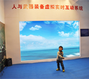

新闻/公告/New/

北京大学的认知神经科学实验室初建于1988年，以心理系原有生理心理学为基础，参与了北京大学第一个国家重点实验室"视觉、听觉信息处理国家重点实验室"的建设，开拓着生理、心理信息与信号处理以及神经计算方向的研究[更多]
北京大学的认知神经科学实验室初建于1988年，以心理系原有生理心理学为基础，参与了北京大学第一个国家重点实验室"视觉、听觉信息处理国家重点实验室"的建设，开拓着生理、心理信息与信号处理以
回到顶部/